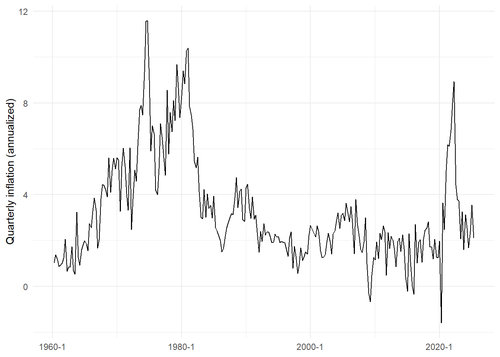
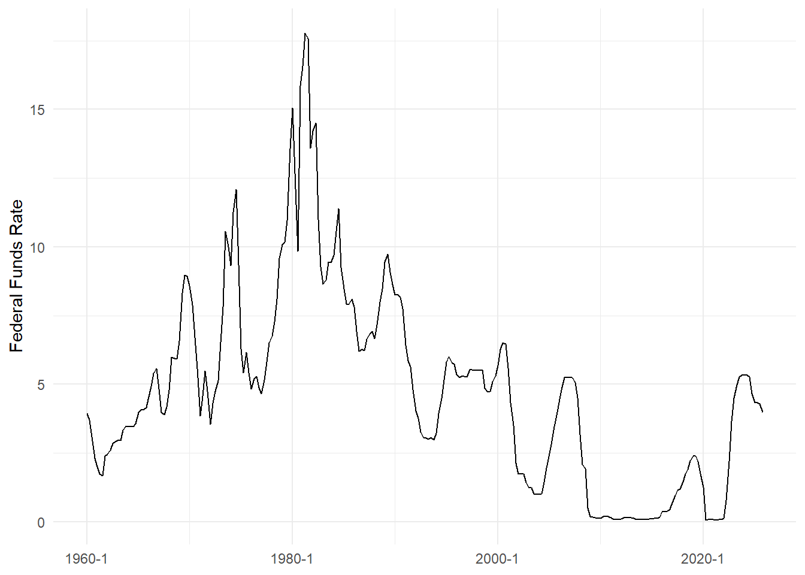
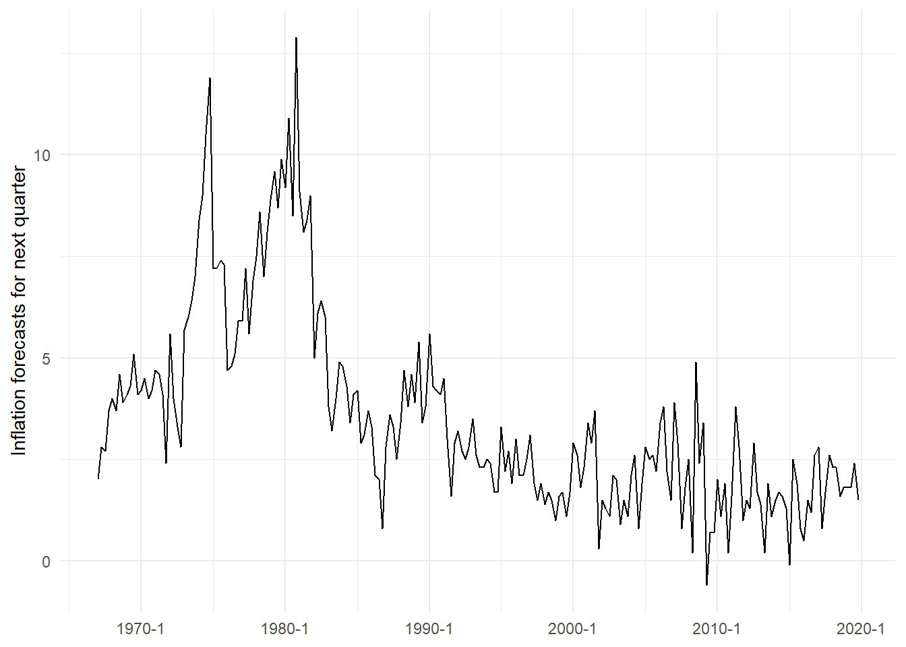
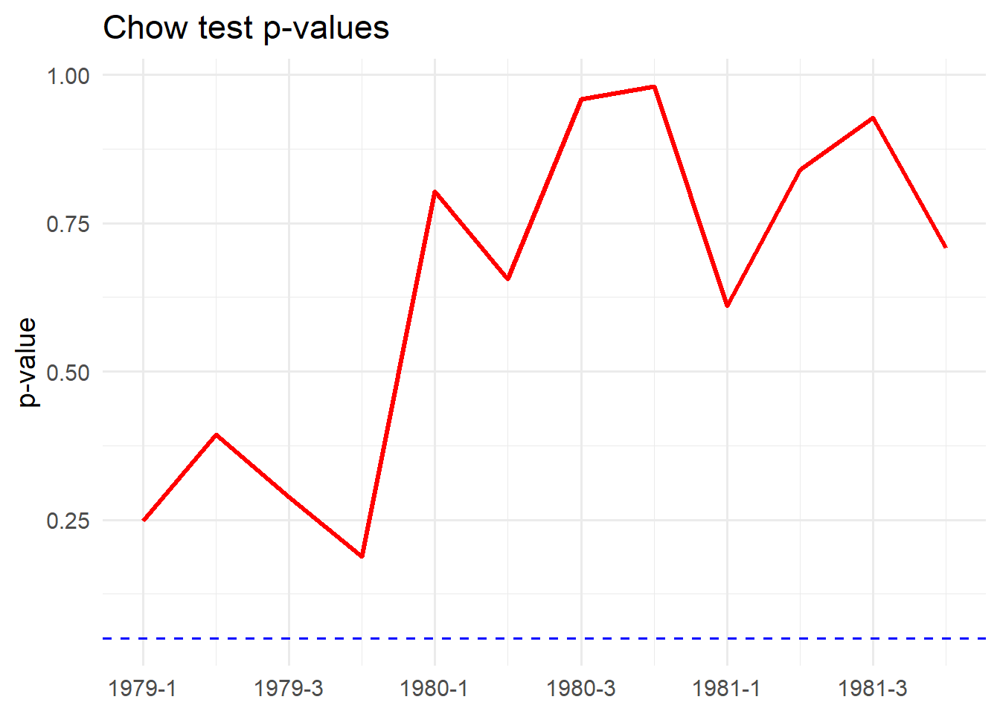
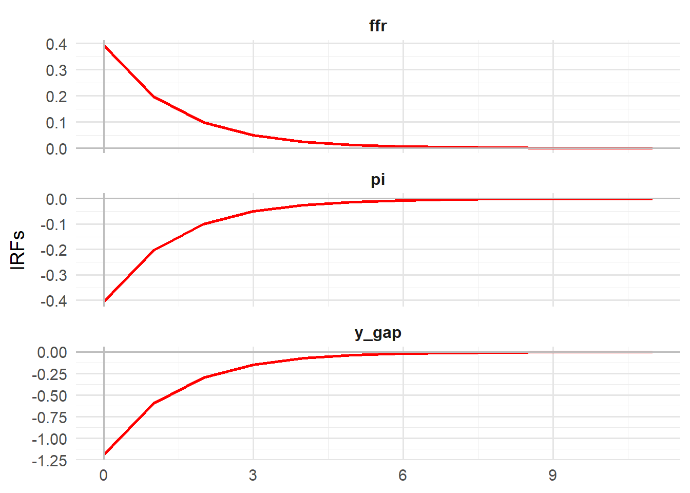
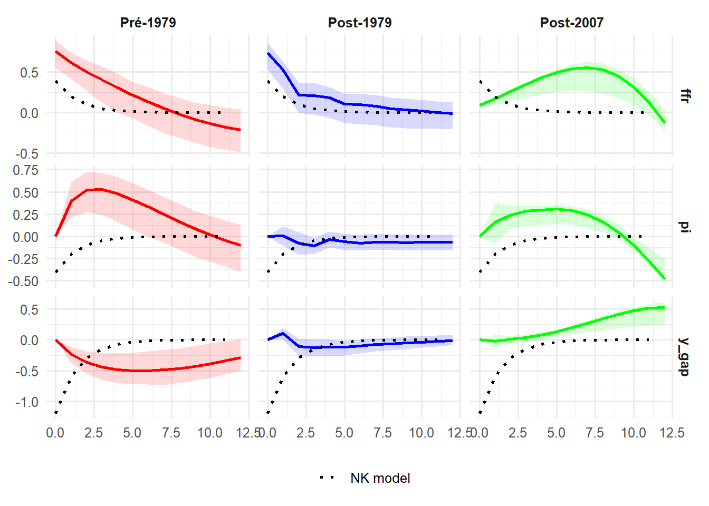

packages <- c(
"tidyverse",
"lubridate",
"zoo",
"fredr",
"openxlsx",
"mFilter",
"R.matlab",
"strucchange",
"vars"
)
to_install <- packages[!packages %in% installed.packages()[, "Package"]]
if(length(to_install) > 0) install.packages(to_install)
for(p in packages) library(p, character.only = TRUE)
source("utils.R")PP_project
#| setup #| include: true #| echo: false
Solving the price puzzle
This project aims at studying the price puzzle, a macroeconomic paradox observed by Sims (1980), when an increase of interest rate is sometimes followed by an increase of inflation in macroeconometric models.
It is designed as follows :
- Presentation of the data
- Reminder of the results of the NK framework
- Modeling of the MP in US according to Castelnuovo and Surico (2010)
- Solving the price puzzle according different strategies
- Extensions
Output gap (https://www.cbo.gov/data/budget-economic-data)
ogap <- read.csv2("data/Quarterly_January2025.csv") %>%
mutate(
date = as.yearqtr(date, format = "%Y q%q")
)
GDP Deflator and Inflation (FREDR)
fredr::fredr_set_key("2081d90b146ea654a4866e909178bfaf")
gdpdef <- fredr::fredr(
series_id = "GDPDEF",
observation_start = as.Date("1960-01-01")
) %>%
transmute(
date = as.yearqtr(date),
p_gdp = log(value)
) %>%
arrange(date)
pi_gdp <- gdpdef %>%
mutate(
pi = 400 * (p_gdp - lag(p_gdp)) # inflation trimestrielle annualisée
) %>%
drop_na() %>%
dplyr::select(date, pi)
ggplot(pi_gdp, aes(date, pi)) +
geom_line() +
theme_minimal() +
labs(x = NULL, y = "Quarterly inflation (annualized)")
ffr_m <- fredr::fredr(
series_id = "FEDFUNDS",
observation_start = as.Date("1960-01-01")
) %>%
transmute(
date_m = as.yearmon(date),
ffr = value
)
ffr_q <- ffr_m %>%
mutate(
date = as.yearqtr(date_m)
) %>%
group_by(date) %>%
summarise(
ffr = mean(ffr, na.rm = TRUE)
) %>%
ungroup() %>%
arrange(date) %>%
filter(date <= "2006 Q4")
ggplot(ffr_q, aes(date, ffr)) +
geom_line() +
theme_minimal() +
labs(x = NULL, y = "Federal Funds Rate")
We do a Chow test to highlight the change of regime post 1979.
df_us <- pi_gdp %>%
inner_join(ogap, by = "date") %>%
inner_join(ffr_q, by = "date") %>%
arrange(date)
print(head(df_us, 10))# A tibble: 10 × 4
date pi y_gap ffr
<yearqtr> <dbl> <dbl> <dbl>
1 1960 Q2 1.01 -0.884 3.70
2 1960 Q3 1.37 -1.39 2.94
3 1960 Q4 1.18 -3.58 2.30
4 1961 Q1 0.873 -3.83 2.00
5 1961 Q2 0.922 -3.04 1.73
6 1961 Q3 1.02 -2.05 1.68
7 1961 Q4 1.25 -1.03 2.4
8 1962 Q1 2.06 -0.242 2.46
9 1962 Q2 0.657 -0.381 2.61
10 1962 Q3 0.833 -0.250 2.85# 6. Sauvegarde --
dir.create("sorties", showWarnings = FALSE)We run a Chow test to find the best break point, following Paul Volcker’s appointment at the Fed.
df <- df_us %>% dplyr::select(-date)
select_order <- VARselect(df)
lags <- select_order$selection["SC(n)"]
var_fit <- VAR(df, p = lags, type = "const")
ffr_eq <- var_fit$varresult$ffr
resid_ffr <- residuals(ffr_eq)
quarters <- seq(as.yearqtr("1979 Q1"), as.yearqtr("1981 Q4"), by = 0.25)
p_values <- numeric(length(quarters))
for(i in seq_along(quarters)) {
bp <- which(df_us$date == quarters[i])
if(length(bp) == 1) {
chow <- sctest(resid_ffr ~ 1, type = "Chow", point = bp)
p_values[i] <- chow$p.value
} else {
p_values[i] <- NA
}
}
p_df <- data.frame(
Quarter = quarters,
P_value = p_values
)
ggplot(p_df, aes(x = Quarter, y = P_value)) +
geom_line(color = "red", size = 1.2) +
geom_hline(yintercept = 0.05, linetype = "dashed", color = "blue") +
theme_minimal(base_size = 14) +
labs(
title = "Chow test p-values",
x = NULL,
y = "p-value"
)
Here we introduce the NK model and its properties.
[1] 0The parameters are taken from Clarida, R., Galí, J., & Gertler, M. (2000).
Let’s observe the IRFs.
mat_data <- R.matlab::readMat("sorties/irfs.mat")
oo_matrix <- mat_data$oo.
irfs_list <- oo_matrix[[20]]
x_eb <- as.numeric(irfs_list[[6]])
pi_eb <- as.numeric(irfs_list[[7]])
int_eb <- as.numeric(irfs_list[[8]])
nk_df <- data.frame(
horizon = 0:(length(x_eb)-1),
y_gap = x_eb,
pi = pi_eb,
ffr = int_eb,
check.names = FALSE
) %>%
pivot_longer(cols = -horizon, names_to = "variable", values_to = "irf")
ggplot(nk_df, aes(x = horizon, y = irf)) +
theme_minimal(base_size = 14) +
geom_line(size = 1, color = "red") +
facet_wrap(~variable, ncol = 1, scales = "free_y") +
labs(title = "IRFs to a MP shock in a NK model",
x = "Periods",
y = "Response") +
geom_hline(yintercept = 0, color = "grey", linetype = "solid") +
geom_vline(xintercept = 0, color = "grey", linetype = "solid") +
theme(
legend.position = "none",
strip.text = element_text(face = "bold", size = 12),
panel.grid.major = element_line(color = "gray90")
)
Let’s construct a SVAR model based on [og(t) pi(t) ffr(t)]
# echo: false
Y_pre_ts <- df_us %>%
filter(date <= as.yearqtr("1979 Q4")) %>%
df_to_ts()
Y_post_ts <- df_us %>%
filter(date >= as.yearqtr("1980 Q1")) %>%
df_to_ts()
lags_pre <- VARselect(Y_pre_ts, lag.max = 8, type = "const")
lags_post <- VARselect(Y_post_ts, lag.max = 8, type = "const")
p_pre <- lags_pre$selection["SC(n)"]
p_post <- lags_post$selection["SC(n)"]
cat("Lags retenus (pré) :", p_pre, "\n")Lags retenus (pré) : 1 cat("Lags retenus (post) :", p_post, "\n")Lags retenus (post) : 2 var_pre <- VAR(Y_pre_ts, p = p_pre, type = "const")
var_post <- VAR(Y_post_ts, p = p_post, type = "const")
summary(var_pre)
VAR Estimation Results:
=========================
Endogenous variables: pi, y_gap, ffr
Deterministic variables: const
Sample size: 78
Log Likelihood: -314.497
Roots of the characteristic polynomial:
0.9592 0.9592 0.4586
Call:
VAR(y = Y_pre_ts, p = p_pre, type = "const")
Estimation results for equation pi:
===================================
pi = pi.l1 + y_gap.l1 + ffr.l1 + const
Estimate Std. Error t value Pr(>|t|)
pi.l1 0.48854 0.10353 4.719 1.09e-05 ***
y_gap.l1 -0.03625 0.06503 -0.557 0.579
ffr.l1 0.49122 0.11566 4.247 6.22e-05 ***
const -0.37181 0.35008 -1.062 0.292
---
Signif. codes: 0 '***' 0.001 '**' 0.01 '*' 0.05 '.' 0.1 ' ' 1
Residual standard error: 1.21 on 74 degrees of freedom
Multiple R-Squared: 0.8099, Adjusted R-squared: 0.8022
F-statistic: 105.1 on 3 and 74 DF, p-value: < 2.2e-16
Estimation results for equation y_gap:
======================================
y_gap = pi.l1 + y_gap.l1 + ffr.l1 + const
Estimate Std. Error t value Pr(>|t|)
pi.l1 0.16087 0.07385 2.178 0.032566 *
y_gap.l1 0.99778 0.04639 21.508 < 2e-16 ***
ffr.l1 -0.30845 0.08251 -3.738 0.000362 ***
const 1.02427 0.24973 4.102 0.000104 ***
---
Signif. codes: 0 '***' 0.001 '**' 0.01 '*' 0.05 '.' 0.1 ' ' 1
Residual standard error: 0.8629 on 74 degrees of freedom
Multiple R-Squared: 0.8786, Adjusted R-squared: 0.8736
F-statistic: 178.5 on 3 and 74 DF, p-value: < 2.2e-16
Estimation results for equation ffr:
====================================
ffr = pi.l1 + y_gap.l1 + ffr.l1 + const
Estimate Std. Error t value Pr(>|t|)
pi.l1 0.09659 0.07434 1.299 0.197882
y_gap.l1 0.17600 0.04670 3.769 0.000327 ***
ffr.l1 0.86717 0.08305 10.441 3.34e-16 ***
const 0.35043 0.25138 1.394 0.167476
---
Signif. codes: 0 '***' 0.001 '**' 0.01 '*' 0.05 '.' 0.1 ' ' 1
Residual standard error: 0.8686 on 74 degrees of freedom
Multiple R-Squared: 0.8965, Adjusted R-squared: 0.8923
F-statistic: 213.5 on 3 and 74 DF, p-value: < 2.2e-16
Covariance matrix of residuals:
pi y_gap ffr
pi 1.46332 0.05757 0.2308
y_gap 0.05757 0.74461 0.1593
ffr 0.23077 0.15934 0.7545
Correlation matrix of residuals:
pi y_gap ffr
pi 1.00000 0.05515 0.2196
y_gap 0.05515 1.00000 0.2126
ffr 0.21963 0.21259 1.0000summary(var_post)
VAR Estimation Results:
=========================
Endogenous variables: pi, y_gap, ffr
Deterministic variables: const
Sample size: 106
Log Likelihood: -308.405
Roots of the characteristic polynomial:
0.9161 0.863 0.863 0.372 0.2727 0.2233
Call:
VAR(y = Y_post_ts, p = p_post, type = "const")
Estimation results for equation pi:
===================================
pi = pi.l1 + y_gap.l1 + ffr.l1 + pi.l2 + y_gap.l2 + ffr.l2 + const
Estimate Std. Error t value Pr(>|t|)
pi.l1 0.69185 0.09804 7.057 2.36e-10 ***
y_gap.l1 0.09731 0.11638 0.836 0.4051
ffr.l1 0.05190 0.07992 0.649 0.5176
pi.l2 0.21244 0.10261 2.070 0.0410 *
y_gap.l2 -0.10249 0.10826 -0.947 0.3461
ffr.l2 -0.06701 0.07596 -0.882 0.3798
const 0.30056 0.13894 2.163 0.0329 *
---
Signif. codes: 0 '***' 0.001 '**' 0.01 '*' 0.05 '.' 0.1 ' ' 1
Residual standard error: 0.6633 on 99 degrees of freedom
Multiple R-Squared: 0.863, Adjusted R-squared: 0.8547
F-statistic: 103.9 on 6 and 99 DF, p-value: < 2.2e-16
Estimation results for equation y_gap:
======================================
y_gap = pi.l1 + y_gap.l1 + ffr.l1 + pi.l2 + y_gap.l2 + ffr.l2 + const
Estimate Std. Error t value Pr(>|t|)
pi.l1 -0.04639 0.08383 -0.553 0.581238
y_gap.l1 1.02210 0.09951 10.271 < 2e-16 ***
ffr.l1 0.17099 0.06834 2.502 0.013984 *
pi.l2 0.04085 0.08774 0.466 0.642495
y_gap.l2 -0.15021 0.09257 -1.623 0.107815
ffr.l2 -0.22065 0.06495 -3.397 0.000981 ***
const 0.30934 0.11880 2.604 0.010636 *
---
Signif. codes: 0 '***' 0.001 '**' 0.01 '*' 0.05 '.' 0.1 ' ' 1
Residual standard error: 0.5671 on 99 degrees of freedom
Multiple R-Squared: 0.914, Adjusted R-squared: 0.9088
F-statistic: 175.4 on 6 and 99 DF, p-value: < 2.2e-16
Estimation results for equation ffr:
====================================
ffr = pi.l1 + y_gap.l1 + ffr.l1 + pi.l2 + y_gap.l2 + ffr.l2 + const
Estimate Std. Error t value Pr(>|t|)
pi.l1 0.015943 0.130864 0.122 0.903281
y_gap.l1 0.532405 0.155338 3.427 0.000889 ***
ffr.l1 0.783091 0.106680 7.341 6.02e-11 ***
pi.l2 0.342415 0.136959 2.500 0.014058 *
y_gap.l2 -0.421249 0.144497 -2.915 0.004395 **
ffr.l2 0.041784 0.101390 0.412 0.681147
const 0.004184 0.185449 0.023 0.982047
---
Signif. codes: 0 '***' 0.001 '**' 0.01 '*' 0.05 '.' 0.1 ' ' 1
Residual standard error: 0.8853 on 99 degrees of freedom
Multiple R-Squared: 0.9419, Adjusted R-squared: 0.9384
F-statistic: 267.6 on 6 and 99 DF, p-value: < 2.2e-16
Covariance matrix of residuals:
pi y_gap ffr
pi 0.43994 0.06296 0.1274
y_gap 0.06296 0.32165 0.2304
ffr 0.12737 0.23035 0.7838
Correlation matrix of residuals:
pi y_gap ffr
pi 1.0000 0.1674 0.2169
y_gap 0.1674 1.0000 0.4588
ffr 0.2169 0.4588 1.0000# 7. IRFs with Cholesky identification
irf_pre <- irf(
var_pre,
impulse = "ffr",
response = c("y_gap", "pi", "ffr"),
n.ahead = 20,
boot = TRUE,
runs = 500,
ortho = TRUE # Cholesky
)
irf_post <- irf(
var_post,
impulse = "ffr",
response = c("y_gap", "pi", "ffr"),
n.ahead = 20,
boot = TRUE,
runs = 500,
ortho = TRUE
)
df_irf_pre <- irf_to_df(irf_pre, impulse_name = "ffr")
df_irf_post <- irf_to_df(irf_post, impulse_name = "ffr")
df_irf_pre$period <- factor("Pré-1979", levels = c("Pré-1979", "Post-1979"))
df_irf_post$period <- factor("Post-1979", levels = c("Pré-1979", "Post-1979"))
nk_df_long <- nk_df %>%
mutate(lower = irf, upper = irf) %>% # bandes de confiance égales à la valeur
expand_grid(period = c("Pré-1979", "Post-1979"))
df_irf_all <- bind_rows(df_irf_pre, df_irf_post)
# Ajouter un identifiant pour la légende combinée
df_irf_all_plot <- df_irf_all %>%
mutate(period_factor = factor(period, levels = c("Pré-1979", "Post-1979")))
nk_df_long_plot <- nk_df_long %>%
mutate(period_factor = factor(period, levels = c("Pré-1979", "Post-1979")))
ggplot() +
geom_ribbon(data = df_irf_all_plot,
aes(x = horizon, ymin = lower, ymax = upper, fill = period_factor),
alpha = 0.15, color = NA, show.legend = FALSE) +
geom_line(data = df_irf_all_plot,
aes(x = horizon, y = irf, color = period_factor),
size = 1, show.legend = FALSE) +
geom_line(data = nk_df_long_plot,
aes(x = horizon, y = irf, linetype = "NK model"),
color = "black", size = 1) +
facet_grid(variable ~ period_factor, scales = "free_y") +
scale_color_manual(values = c("Pré-1979" = "red", "Post-1979" = "blue")) +
scale_fill_manual(values = c("Pré-1979" = "red", "Post-1979" = "blue")) +
scale_linetype_manual(name = "", values = c("NK model" = "dotted")) +
labs(title = "IRFs to ffr shock", x = NULL, y = NULL) +
theme_minimal(base_size = 12) +
theme(
legend.position = "bottom",
plot.title = element_text(face = "bold", hjust = 0.5,size = 12),
strip.text = element_text(face = "bold")
)